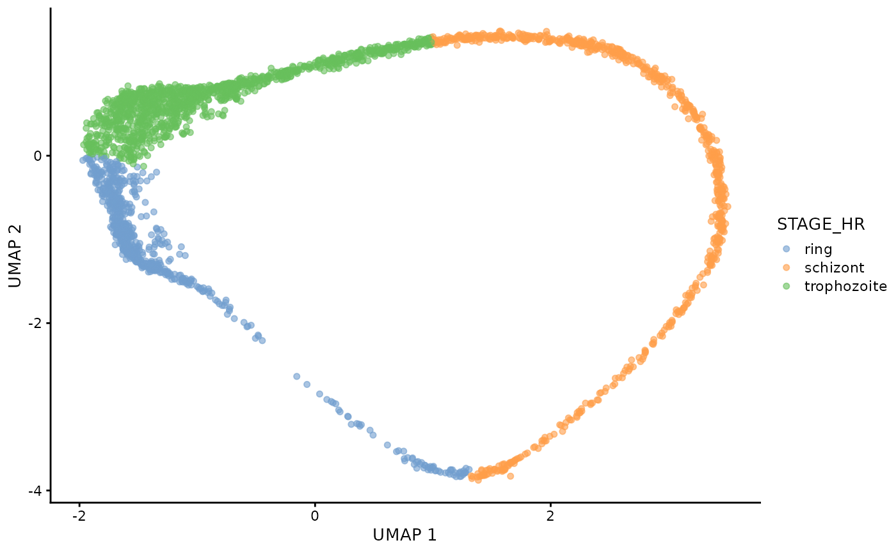
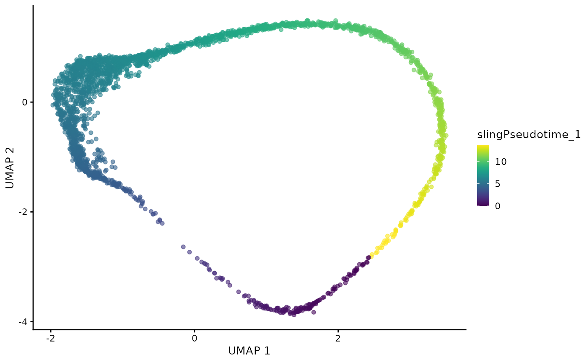
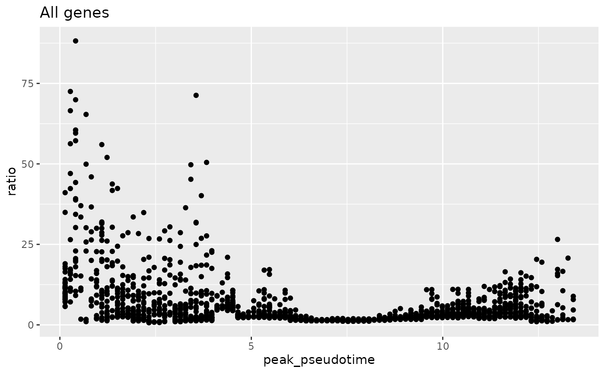
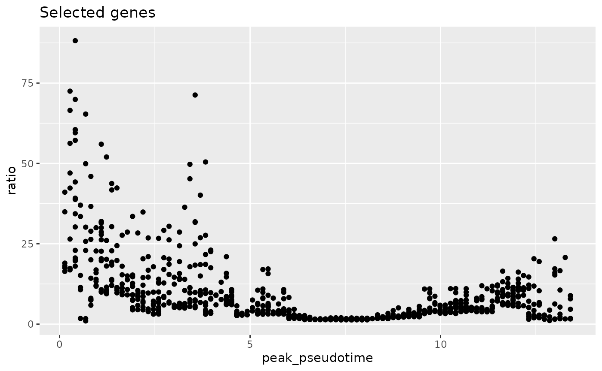
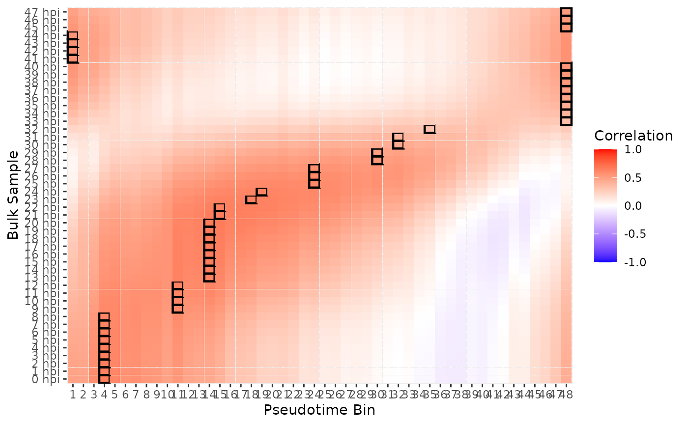
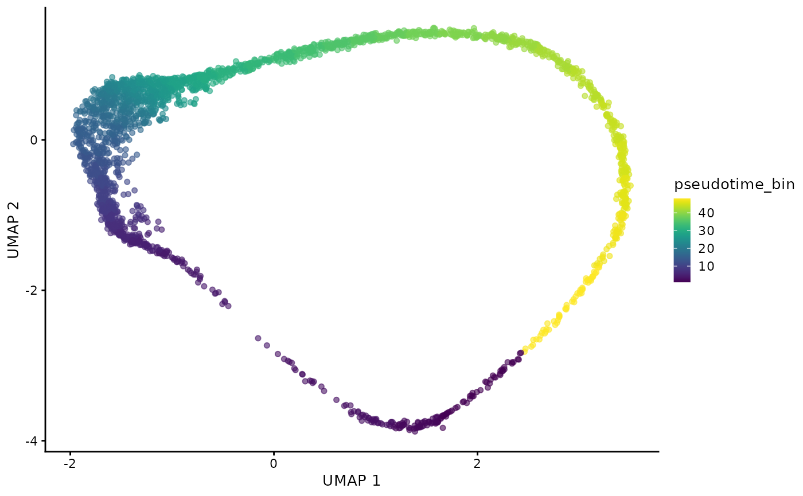
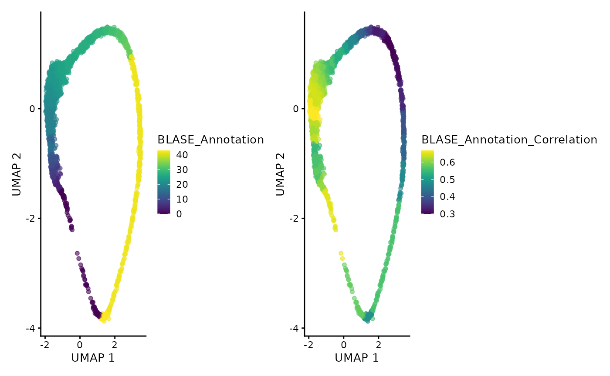
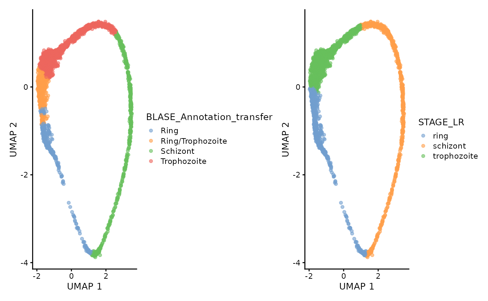

BLASE for annotating scRNA-seq
BLASE-for-annotating-scRNA-seq.Rmd
RNGversion("3.5.0")
#> Warning in RNGkind("Mersenne-Twister", "Inversion", "Rounding"): non-uniform
#> 'Rounding' sampler used
SEED <- 7
set.seed(SEED)
N_CORES <- 2
bpparam <- MulticoreParam(N_CORES)This article will show how BLASE can be used for annotating scRNA-seq data using existing bulk or microarray data. We make use of scRNA-seq Dogga et al. 2024 and microarray data from Painter et al. 2018. Code for generating the objects used here is available in the BLASE reproducibility repository.
Load Data
First we’ll load in the data we’re using, pre-prepared from the BLASE reproducibility repository.
We can examine the true lifecycle stages, and also the calculated pseudotime trajectory (Slingshot).
plotUMAP(MCA_PF_SCE, colour_by = "STAGE_HR")
#| fig.alt: >
#| UMAP of Dogga et al. single-cell RNA-seq reference coloured by pseudotime,
#| starting with Rings, and ending with Schizonts.
plotUMAP(MCA_PF_SCE, colour_by = "slingPseudotime_1")
Prepare BLASE
Now we’ll prepare BLASE for use.
Create BLASE data object
First, we create the object, giving it the number of bins we want to use, and how to calculate them.
blase_data <- as.BlaseData(
MCA_PF_SCE,
pseudotime_slot = "slingPseudotime_1",
n_bins = 48,
split_by = "cells"
)
# Add these bins to the sc metadata
MCA_PF_SCE <- assign_pseudotime_bins(MCA_PF_SCE,
pseudotime_slot = "slingPseudotime_1",
n_bins = 48,
split_by = "cells"
)Select Genes
Now we will select the genes we want to use, using BLASE’s gene peakedness metric.
gene_peakedness_info <- calculate_gene_peakedness(
MCA_PF_SCE,
window_pct = 5,
knots = 18,
BPPARAM = bpparam
)
genes_to_use <- gene_peakedness_spread_selection(
MCA_PF_SCE,
gene_peakedness_info,
genes_per_bin = 30,
n_gene_bins = 30
)
head(gene_peakedness_info)
#> gene peak_pseudotime mean_in_window mean_out_window ratio
#> 28 PF3D7-1401100 3.8311312 5.793085 1.528934 3.788969
#> 44 PF3D7-1401200 6.0203490 4.791942 1.921439 2.493934
#> 29 PF3D7-1401400 3.9679573 696.174509 39.689901 17.540344
#> 84 PF3D7-1401600 11.4933936 93.076303 7.631160 12.196875
#> 1 PF3D7-1401900 0.1368261 43.270750 3.321464 13.027613
#> 80 PF3D7-1402200 10.9460892 3.754015 1.554102 2.415553
#> window_start window_end deviance_explained
#> 28 3.4890659 4.1731965 0.1881312
#> 44 5.6782838 6.3624143 0.2035355
#> 29 3.6258920 4.3100226 0.2513795
#> 84 11.1513283 11.8354589 0.6891177
#> 1 -0.2052392 0.4788914 0.3846938
#> 80 10.6040239 11.2881544 0.1768597By using the gene_peakedness_spread_selection function,
we can ensure that genes with high ratios are selected from throughout
the trajectory.
ggplot(gene_peakedness_info, aes(x = peak_pseudotime, y = ratio)) +
geom_point() +
ggtitle("All genes")
gene_peakedness_selected_genes <- gene_peakedness_info[
gene_peakedness_info$gene %in% genes_to_use,
]
ggplot(gene_peakedness_selected_genes, aes(x = peak_pseudotime, y = ratio)) +
geom_point() +
ggtitle("Selected genes")
Here, we add them to the BLASE object for mapping with.
genes(blase_data) <- genes_to_useCalculate Mappings
Now we can perform the actual mapping step, and review the results.
mapping_results <- map_all_best_bins(
blase_data,
painter_microarray,
BPPARAM = bpparam
)
plot_mapping_result_heatmap(mapping_results)
#> Inferred correlation metric.
Transfer Mappings
In the Painter et al. paper, the expected lifecycle stages are as follows:
| Lifecycle Stage | Painter et al. HPI |
|---|---|
| Ring | 0-21 |
| Trophozoite | 16-32 |
| Schizont | 33-48 |
We can use this to transfer back to the scRNA-seq as follows:
plotUMAP(MCA_PF_SCE, colour_by = "pseudotime_bin")
annotated_sce <- annotate_sce(MCA_PF_SCE, mapping_results, include_stats = TRUE)
annotated_sce$BLASE_Annotation <- gsub(
" hpi", "", annotated_sce$BLASE_Annotation)
annotated_sce$BLASE_Annotation <- as.numeric(annotated_sce$BLASE_Annotation)
annotation_plot <- plotUMAP(annotated_sce, colour_by = "BLASE_Annotation")
corr_plot <- plotUMAP(
annotated_sce, colour_by = "BLASE_Annotation_Correlation") +
labs(color = "Correlation")
annotation_plot + corr_plot
annotated_sce$BLASE_Annotation_transfer <- ""
for (best_bulk in unique(annotated_sce$BLASE_Annotation)) {
mask <- colData(annotated_sce)[, "BLASE_Annotation"] == best_bulk
if (best_bulk %in% 0:15) {
annotated_sce[, mask]$BLASE_Annotation_transfer <- "Ring"
} else if (best_bulk %in% 16:21) {
annotated_sce[, mask]$BLASE_Annotation_transfer <- "Ring/Trophozoite"
} else if (best_bulk %in% 22:32) {
annotated_sce[, mask]$BLASE_Annotation_transfer <- "Trophozoite"
} else if (best_bulk %in% 33:48) {
annotated_sce[, mask]$BLASE_Annotation_transfer <- "Schizont"
}
}
plotUMAP(annotated_sce, colour_by = "BLASE_Annotation_transfer") +
plotUMAP(annotated_sce, colour_by = "STAGE_LR")
Session Info
sessionInfo()
#> R version 4.6.0 (2026-04-24)
#> Platform: x86_64-pc-linux-gnu
#> Running under: Ubuntu 24.04.4 LTS
#>
#> Matrix products: default
#> BLAS: /usr/lib/x86_64-linux-gnu/openblas-pthread/libblas.so.3
#> LAPACK: /usr/lib/x86_64-linux-gnu/openblas-pthread/libopenblasp-r0.3.26.so; LAPACK version 3.12.0
#>
#> Random number generation:
#> RNG: Mersenne-Twister
#> Normal: Inversion
#> Sample: Rounding
#>
#> locale:
#> [1] LC_CTYPE=C.UTF-8 LC_NUMERIC=C LC_TIME=C.UTF-8
#> [4] LC_COLLATE=C.UTF-8 LC_MONETARY=C.UTF-8 LC_MESSAGES=C.UTF-8
#> [7] LC_PAPER=C.UTF-8 LC_NAME=C LC_ADDRESS=C
#> [10] LC_TELEPHONE=C LC_MEASUREMENT=C.UTF-8 LC_IDENTIFICATION=C
#>
#> time zone: UTC
#> tzcode source: system (glibc)
#>
#> attached base packages:
#> [1] stats4 stats graphics grDevices utils datasets methods
#> [8] base
#>
#> other attached packages:
#> [1] patchwork_1.3.2 blase_1.3.0
#> [3] BiocParallel_1.46.0 scater_1.40.1
#> [5] ggplot2_4.0.3 scuttle_1.22.0
#> [7] SingleCellExperiment_1.34.0 SummarizedExperiment_1.42.0
#> [9] Biobase_2.72.0 GenomicRanges_1.64.0
#> [11] Seqinfo_1.2.0 IRanges_2.46.0
#> [13] S4Vectors_0.50.1 BiocGenerics_0.58.1
#> [15] generics_0.1.4 MatrixGenerics_1.24.0
#> [17] matrixStats_1.5.0 BiocStyle_2.40.0
#>
#> loaded via a namespace (and not attached):
#> [1] RcppAnnoy_0.0.23 splines_4.6.0 later_1.4.8
#> [4] tibble_3.3.1 polyclip_1.10-7 fastDummies_1.7.6
#> [7] lifecycle_1.0.5 globals_0.19.1 lattice_0.22-9
#> [10] MASS_7.3-65 SnowballC_0.7.1 magrittr_2.0.5
#> [13] plotly_4.12.0 sass_0.4.10 rmarkdown_2.31
#> [16] jquerylib_0.1.4 yaml_2.3.12 httpuv_1.6.17
#> [19] otel_0.2.0 Seurat_5.5.0 sctransform_0.4.3
#> [22] spam_2.11-3 sp_2.2-1 spatstat.sparse_3.2-0
#> [25] reticulate_1.46.0 cowplot_1.2.0 pbapply_1.7-4
#> [28] RColorBrewer_1.1-3 abind_1.4-8 Rtsne_0.17
#> [31] purrr_1.2.2 ggrepel_0.9.8 irlba_2.3.7
#> [34] listenv_0.10.1 spatstat.utils_3.2-3 goftest_1.2-3
#> [37] RSpectra_0.16-2 spatstat.random_3.5-0 fitdistrplus_1.2-6
#> [40] parallelly_1.47.0 pkgdown_2.2.0 codetools_0.2-20
#> [43] DelayedArray_0.38.1 tidyselect_1.2.1 farver_2.1.2
#> [46] ScaledMatrix_1.20.0 viridis_0.6.5 spatstat.explore_3.8-1
#> [49] jsonlite_2.0.0 BiocNeighbors_2.6.0 progressr_0.19.0
#> [52] ggridges_0.5.7 survival_3.8-6 systemfonts_1.3.2
#> [55] tools_4.6.0 ragg_1.5.2 ica_1.0-3
#> [58] Rcpp_1.1.1-1.1 glue_1.8.1 gridExtra_2.3
#> [61] SparseArray_1.12.2 xfun_0.57 mgcv_1.9-4
#> [64] dplyr_1.2.1 withr_3.0.2 BiocManager_1.30.27
#> [67] fastmap_1.2.0 boot_1.3-32 digest_0.6.39
#> [70] rsvd_1.0.5 R6_2.6.1 mime_0.13
#> [73] textshaping_1.0.5 scattermore_1.2 tensor_1.5.1
#> [76] spatstat.data_3.1-9 tidyr_1.3.2 data.table_1.18.4
#> [79] httr_1.4.8 htmlwidgets_1.6.4 S4Arrays_1.12.0
#> [82] uwot_0.2.4 pkgconfig_2.0.3 gtable_0.3.6
#> [85] lmtest_0.9-40 S7_0.2.2 XVector_0.52.0
#> [88] htmltools_0.5.9 dotCall64_1.2 bookdown_0.46
#> [91] SeuratObject_5.4.0 scales_1.4.0 png_0.1-9
#> [94] spatstat.univar_3.2-0 knitr_1.51 reshape2_1.4.5
#> [97] nlme_3.1-169 cachem_1.1.0 zoo_1.8-15
#> [100] stringr_1.6.0 KernSmooth_2.23-26 parallel_4.6.0
#> [103] miniUI_0.1.2 vipor_0.4.7 desc_1.4.3
#> [106] pillar_1.11.1 grid_4.6.0 vctrs_0.7.3
#> [109] RANN_2.6.2 lsa_0.73.4 promises_1.5.0
#> [112] BiocSingular_1.28.0 beachmat_2.28.0 xtable_1.8-8
#> [115] cluster_2.1.8.2 beeswarm_0.4.0 evaluate_1.0.5
#> [118] cli_3.6.6 compiler_4.6.0 rlang_1.2.0
#> [121] future.apply_1.20.2 labeling_0.4.3 plyr_1.8.9
#> [124] fs_2.1.0 ggbeeswarm_0.7.3 stringi_1.8.7
#> [127] viridisLite_0.4.3 deldir_2.0-4 lazyeval_0.2.3
#> [130] spatstat.geom_3.8-1 Matrix_1.7-5 RcppHNSW_0.6.0
#> [133] sparseMatrixStats_1.24.0 future_1.70.0 shiny_1.13.0
#> [136] ROCR_1.0-12 igraph_2.3.1 bslib_0.11.0